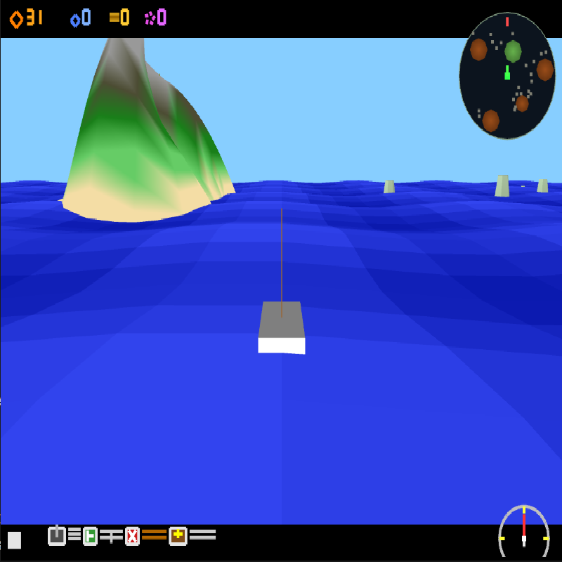
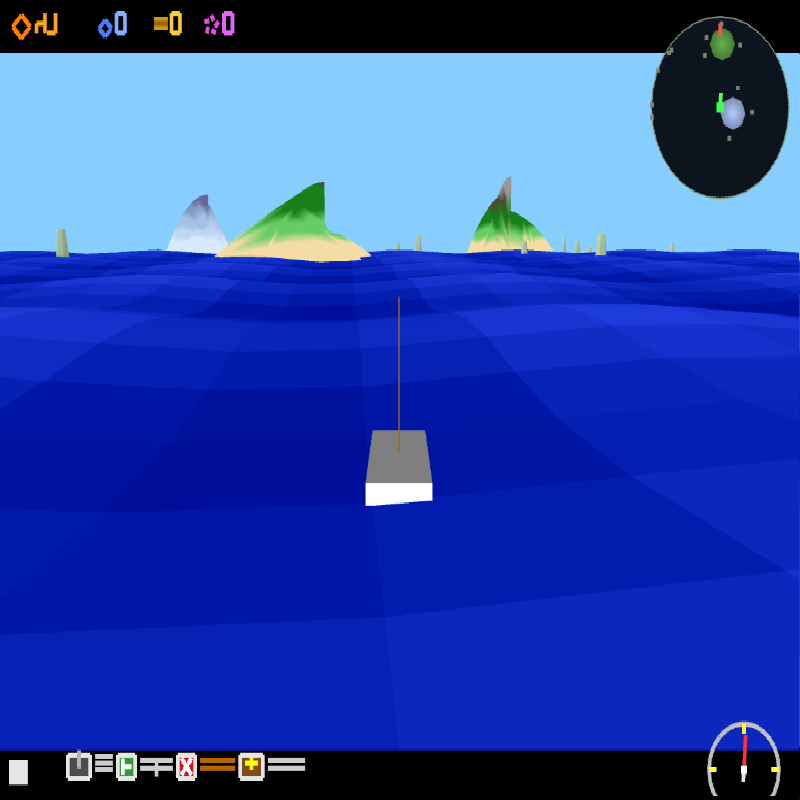
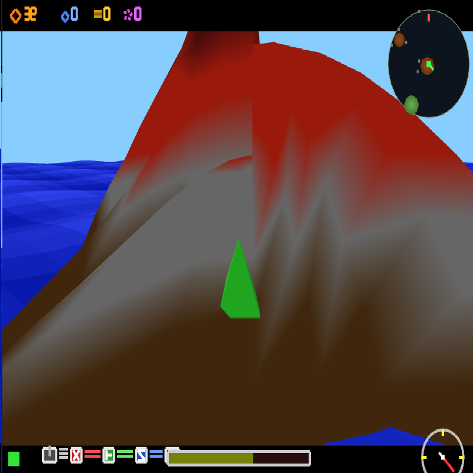

Screenshots




About
Developed a real-time 3D island generation engine for Nintendo Wii using low-level graphics programming. Built entirely in C using devkitPro and GX without a game engine.
Key Contributions
- Created procedural terrain generation system
- Implemented custom rendering pipeline using GX
- Built physics system for player and boat movement
- Designed dynamic camera system
- Optimized performance for Wii hardware